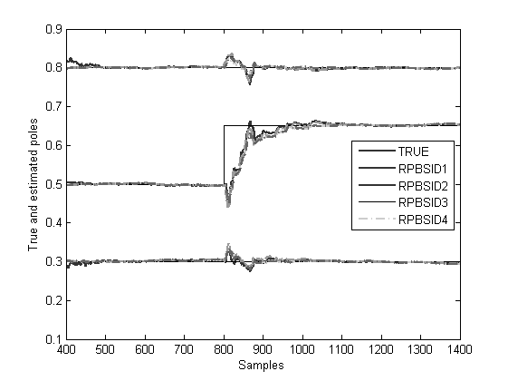

Contents
Example 10: Fast-varying LTV model in open loop
close all; clear; clc;
The third-order LTV model with process noise
% Initial state-space of time-varying system
A0 = [0.8 -0.4 0.2; 0 0.3 -0.5; 0 0 0.5];
B0 = [0 0; 0 -0.6; 0.5 0];
C0 = [0.5 0.5 0; 0 0 1];
F0 = [0.055; 0.04; 0.045];
D0 = zeros(2);
G0 = [0.025; 0.03];
Open-loop identification experiment
Simulation of the model in open loop
% Simulation parameters Ts = 1; Tp = 1500; % Simulation of time-varying system t = 0:Ts:Tp; % time signal u = randn(2,Tp+1); % input signal w = 0.1.*randn(3,Tp+1); % noise signals v = 0.1.*randn(2,Tp+1); % noise signals x = zeros(3,1); y = zeros(2,Tp+1); E = zeros(3,Tp+1); for i = 1:Tp+1 if (i <= 800) A = A0; elseif (i > 800) && (i <= 2065) A(3,3) = 0.65; end if (i <= 200) y(:,i) = C0*x + D0*u(:,i) + 0.001.*G0.*w(i); x = A*x + B0*u(:,i) + 0.001.*F0.*v(i); else y(:,i) = C0*x + D0*u(:,i) + G0.*w(i); x = A*x + B0*u(:,i) + F0.*v(i); end E(:,i) = eig(A); end
Identification of the model in open loop
% Recursive Subspace Identification parameters n = 3; % number of states p = n + 2; % past window size f = n; % past window size lambda = 0.98; % forgetting factor ireg = 1e-6; % initial regularisation rlsopts = struct('ireg',[ireg ireg ireg],'lambda',[lambda lambda lambda],'reg',0); % Start Recursive Subspace Identification idopts = struct('method','varx','weight',1,'ltv',0,'noD',0,'past',0,'Kalm',0); [Ak,Bk,Ck,Dk,Kk,err1,eigA1,dampA1] = rpbsid(u,y,f,p,n,[],idopts,rlsopts); idopts = struct('method','varx','weight',1,'ltv',0,'noD',0,'past',1,'Kalm',0); [Ak,Bk,Ck,Dk,Kk,err2,eigA2,dampA2] = rpbsid(u,y,f,p,n,[],idopts,rlsopts); idopts = struct('method','varx','weight',1,'ltv',1,'noD',0,'past',0,'Kalm',0); [Ak,Bk,Ck,Dk,Kk,err3,eigA3,dampA3] = rpbsid(u,y,f,p,n,[],idopts,rlsopts); idopts = struct('method','varx','weight',1,'ltv',1,'noD',0,'past',1,'Kalm',0); [Ak,Bk,Ck,Dk,Kk,err4,eigA4,dampA4] = rpbsid(u,y,f,p,n,[],idopts,rlsopts); % Plot eigenvalues over time figure, t = 400:1400; ELines = plot(t,E(:,t),'k'); hold on E1Lines = plot(t,real(eigA1(:,t)),'-.','LineWidth',1.5,'Color',[0.8 0.8 0.8]); E2Lines = plot(t,real(eigA2(:,t)),'--','LineWidth',1.5,'Color',[0.6 0.6 0.6]); E3Lines = plot(t,real(eigA3(:,t)),'-.','LineWidth',1.5,'Color',[0.4 0.4 0.4]); E4Lines = plot(t,real(eigA4(:,t)),'-','LineWidth',1.5,'Color',[0.2 0.2 0.2]); EGroup = hggroup; E1Group = hggroup; E2Group = hggroup; E3Group = hggroup; E4Group = hggroup; set(ELines,'Parent',EGroup) set(E1Lines,'Parent',E1Group) set(E2Lines,'Parent',E2Group) set(E3Lines,'Parent',E3Group) set(E3Lines,'Parent',E4Group) set(get(get(EGroup,'Annotation'),'LegendInformation'),'IconDisplayStyle','on'); % Include this hggroup in the legend set(get(get(E1Group,'Annotation'),'LegendInformation'),'IconDisplayStyle','on'); % Include this hggroup in the legend set(get(get(E2Group,'Annotation'),'LegendInformation'),'IconDisplayStyle','on'); % Include this hggroup in the legend set(get(get(E3Group,'Annotation'),'LegendInformation'),'IconDisplayStyle','on'); % Include this hggroup in the legend set(get(get(E4Group,'Annotation'),'LegendInformation'),'IconDisplayStyle','on'); % Include this hggroup in the legend legend('TRUE','RPBSID1','RPBSID2','RPBSID3','RPBSID4','Location','East'); axis([400 1400 0.1 0.9]) xlabel('Samples') ylabel('True and estimated poles')